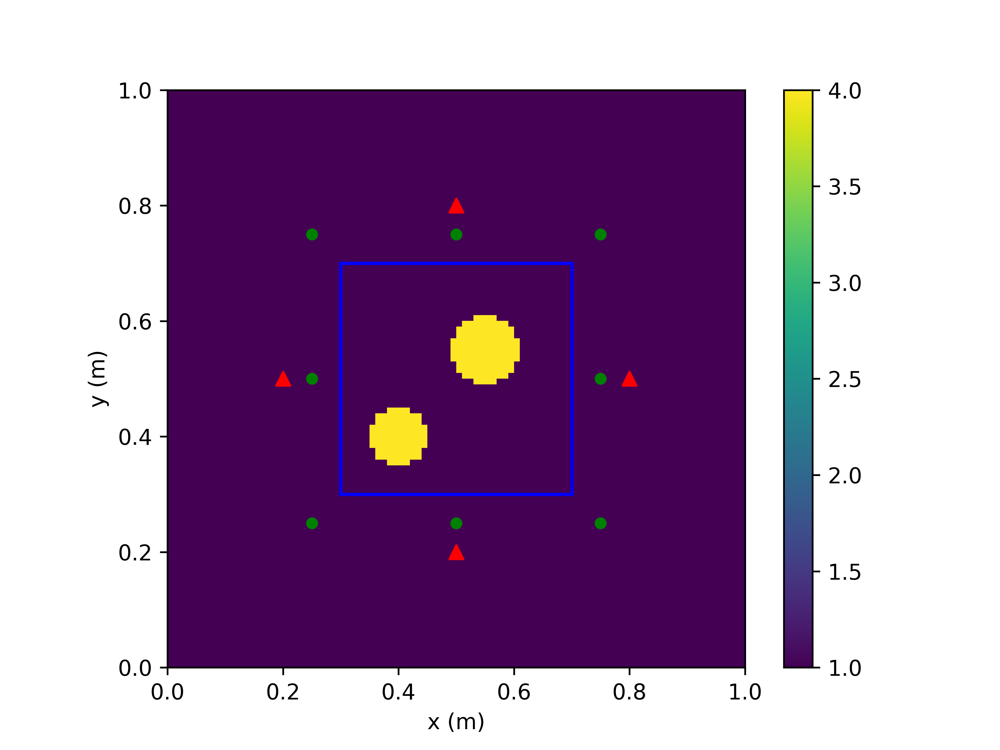
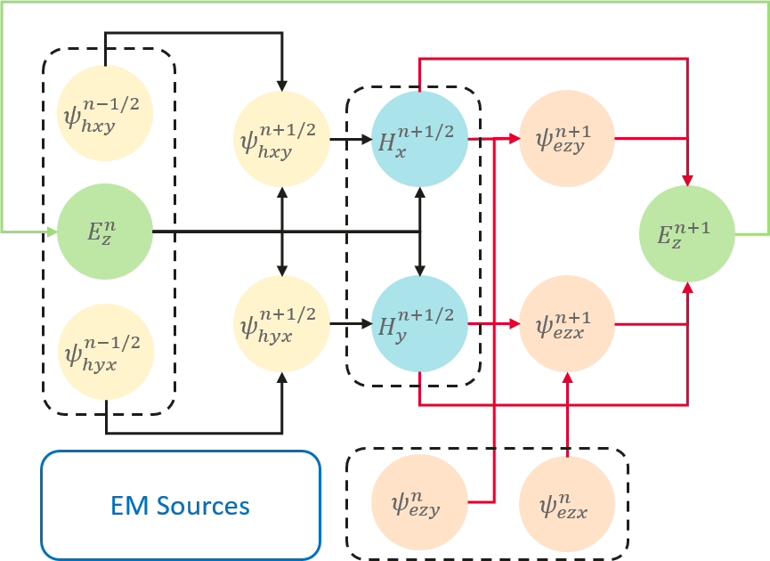
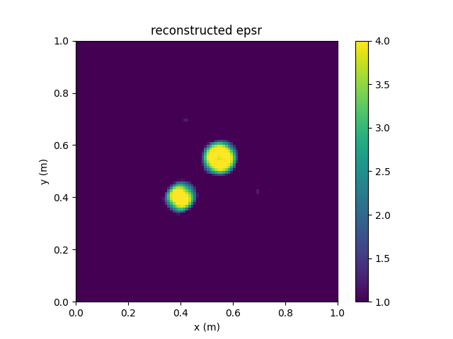

端到端可微分FDTD求解电磁逆散射问题

概述
本教程介绍MindSpore Elec提供的基于端到端可微分FDTD求解电磁逆问题的方法。时域有限差分（FDTD）方法求解麦克斯韦方程组的过程等价于一个循环卷积网络（RCNN）。利用MindSpore的可微分算子重写更新流程，便可得到端到端可微分FDTD。相比于数据驱动的黑盒模型，可微分FDTD方法的求解流程严格满足麦克斯韦方程组的约束。利用MindSpore的基于梯度的优化器，可微分FDTD可求解各种电磁逆问题。
本例面向GPU处理器，你可以在这里下载完整的样例代码： https://gitee.com/mindspore/mindscience/tree/master/MindElec/examples/AD_FDTD/fdtd_inverse
麦克斯韦方程组
有源麦克斯韦方程是电磁仿真的经典控制方程，它是一组描述电场、磁场与电荷密度、电流密度之间关系的偏微分方程组，具体形式如下：
其中\(\epsilon,\mu\)分别是介质的绝对介电常数、绝对磁导率。\(J(x, t)\)是电磁仿真过程中的激励源，通常表现为端口脉冲的形式。这在数学意义上近似为狄拉克函数形式所表示的点源，可以表示为：
其中\(x_0\)为激励源位置，\(g(t)\)为脉冲信号的函数表达形式。
问题描述
本案例求解二维TM模式的电磁逆散射问题。两个介质体位于矩形区域内。在求解区域外侧设置4个激励源（红色三角）和8个观察点（绿色圆点），具体情况如下图所示：

MindSpore Elec求解该问题的具体流程如下：
用传统数值方法获得观察点处的时域电场值，创建训练数据集和评估数据。
定义激励源位置、观察点位置以及求解区域。
定义激励源的时域波形。
构建可微分FDTD网络。
网络训练并评估求解结果。
导入依赖
导入本教程所依赖模块与接口：
import os
import argparse
import numpy as np
from mindspore import nn
import matplotlib.pyplot as plt
from src import transverse_magnetic, EMInverseSolver
from src import zeros, tensor, vstack, elu
from src import Gaussian, CFSParameters, estimate_time_interval
from src import BaseTopologyDesigner
加载数据集
加载用传统数值方法（如FDTD）计算得到的各个观察点处的时域电场值，以及相对介电常数真值。
def load_labels(nt, dataset_dir):
"""
Load labels of Ez fields and epsr.
Args:
nt (int): Number of time steps.
dataset_dir (str): Dataset directory.
Returns:
field_labels (Tensor, shape=(nt, ns, nr)): Ez at receivers.
epsr_labels (Tensor, shape=(nx, ny)): Ground truth for epsr.
"""
field_label_path = os.path.join(dataset_dir, 'ez_labels.npy')
field_labels = tensor(np.load(field_label_path))[:nt]
epsr_label_path = os.path.join(dataset_dir, 'epsr_labels.npy')
epsr_labels = tensor(np.load(epsr_label_path))
return field_labels, epsr_labels
定义激励源位置、观察点位置以及求解区域
继承BaseTopologyDesiger类，用户可以快速定义电磁逆散射问题。用户可在成员函数generate_object、update_sources和get_outputs_at_each_step中分别设置求解区域、激励源位置和观察点位置。以该问题为例，我们定义的电磁逆散射问题如下。
class InverseDomain(BaseTopologyDesigner):
"""
InverseDomain with customized mapping and source locations for user-defined problems.
"""
def generate_object(self, rho):
"""Generate material tensors.
Args:
rho (Parameter): Parameters to be optimized in the inversion domain.
Returns:
epsr (Tensor, shape=(self.cell_nunbers)): Relative permittivity in the whole domain.
sige (Tensor, shape=(self.cell_nunbers)): Conductivity in the whole domain.
"""
# generate background material tensors
epsr = self.background_epsr * self.grid
sige = self.background_sige * self.grid
# ---------------------------------------------
# Customized Differentiable Mapping
# ---------------------------------------------
epsr[30:70, 30:70] = self.background_epsr + elu(rho, alpha=1e-2)
return epsr, sige
def update_sources(self, *args):
"""
Set locations of sources.
Args:
*args: arguments
Returns:
jz (Tensor, shape=(ns, 1, nx+1, ny+1)): Jz tensor.
"""
sources, _, waveform, _ = args
jz = sources[0]
jz[0, :, 20, 50] = waveform
jz[1, :, 50, 20] = waveform
jz[2, :, 80, 50] = waveform
jz[3, :, 50, 80] = waveform
return jz
def get_outputs_at_each_step(self, *args):
"""Compute output each step.
Args:
*args: arguments
Returns:
rx (Tensor, shape=(ns, nr)): Ez fields at receivers.
"""
ez, _, _ = args[0]
rx = [
ez[:, 0, 25, 25],
ez[:, 0, 25, 50],
ez[:, 0, 25, 75],
ez[:, 0, 50, 25],
ez[:, 0, 50, 75],
ez[:, 0, 75, 25],
ez[:, 0, 75, 50],
ez[:, 0, 75, 75],
]
return vstack(rx)
值得注意的是，在generate_object中将待优化变量rho映射为相对介电常数epsr时，选取合适的映射关系可以大大加快求解器收敛速度。本案例采用的映射关系为background_epsr + elu(rho, alpha=1e-2)，保证求解过程中不会出现非物理的介电常数。
定义激励源时域波形
本案例的激励源时域波形为高斯脉冲。FDTD采用蛙跳格式分别更新电场和磁场，而本案例的激励源为电流源，因此应计算半时间步上的激励源时域波形值。
def get_waveform_t(nt, dt, fmax):
"""
Compute waveforms at time t.
Args:
nt (int): Number of time steps.
dt (float): Time interval.
fmax (float): Maximum freuqency of Gaussian wave
Returns:
waveform_t (Tensor, shape=(nt, ns, nr)): Waveforms.
"""
t = (np.arange(0, nt) + 0.5) * dt
waveform = Gaussian(fmax)
waveform_t = waveform(t)
return waveform_t
构建可微分FDTD网络
本案例求解二维TM模式的电磁逆散射问题。时域有限差分（FDTD）方法求解麦克斯韦方程组的过程等价于一个循环卷积网络（RCNN）。当采用CFS-PML对无限大区域进行截断时，TM模式的二维FDTD的第\(n\)个时间步的更新过程如下：

利用MindSpore的可微分算子重写FDTD的更新流程，便可得到端到端可微分FDTD。每个时间步内的计算过程如下：
class FDTDLayer(nn.Cell):
"""
One-step 2D TM-Mode FDTD.
Args:
cell_lengths (tuple): Lengths of Yee cells.
cpmlx_e (Tensor): Updating coefficients for electric fields in the x-direction CPML.
cpmlx_m (Tensor): Updating coefficients for magnetic fields in the x-direction CPML.
cpmly_e (Tensor): Updating coefficients for electric fields in the y-direction CPML.
cpmly_m (Tensor): Updating coefficients for magnetic fields in the y-direction CPML.
"""
def __init__(self,
cell_lengths,
cpmlx_e, cpmlx_m,
cpmly_e, cpmly_m,
):
super(FDTDLayer, self).__init__()
dx = cell_lengths[0]
dy = cell_lengths[1]
self.cpmlx_e = cpmlx_e
self.cpmlx_m = cpmlx_m
self.cpmly_e = cpmly_e
self.cpmly_m = cpmly_m
# operators
self.dx_oper = ops.Conv2D(out_channel=1, kernel_size=(2, 1))
self.dy_oper = ops.Conv2D(out_channel=1, kernel_size=(1, 2))
self.dx_wghts = tensor([-1., 1.]).reshape((1, 1, 2, 1)) / dx
self.dy_wghts = tensor([-1., 1.]).reshape((1, 1, 1, 2)) / dy
self.pad_x = ops.Pad(paddings=((0, 0), (0, 0), (1, 1), (0, 0)))
self.pad_y = ops.Pad(paddings=((0, 0), (0, 0), (0, 0), (1, 1)))
def construct(self, jz_t, ez, hx, hy, pezx, pezy, phxy, phyx,
ceze, cezh, chxh, chxe, chyh, chye):
"""One-step forward propagation
Args:
jz_t (Tensor): Source at time t + 0.5 * dt.
ez, hx, hy (Tensor): Ez, Hx, Hy fields.
pezx, pezy, phxy, phyx (Tensor): CPML auxiliary fields.
ceze, cezh (Tensor): Updating coefficients for Ez fields.
chxh, chxe (Tensor): Updating coefficients for Hx fields.
chyh, chye (Tensor): Updating coefficients for Hy fields.
Returns:
hidden_states (tuple)
"""
# -------------------------------------------------
# Step 1: Update H's at n+1/2 step
# -------------------------------------------------
# compute curl E
dezdx = self.dx_oper(ez, self.dx_wghts) / self.cpmlx_m[2]
dezdy = self.dy_oper(ez, self.dy_wghts) / self.cpmly_m[2]
# update auxiliary fields
phyx = self.cpmlx_m[0] * phyx + self.cpmlx_m[1] * dezdx
phxy = self.cpmly_m[0] * phxy + self.cpmly_m[1] * dezdy
# update H
hx = chxh * hx - chxe * (dezdy + phxy)
hy = chyh * hy + chye * (dezdx + phyx)
# -------------------------------------------------
# Step 2: Update E's at n+1 step
# -------------------------------------------------
# compute curl H
dhydx = self.pad_x(self.dx_oper(hy, self.dx_wghts)) / self.cpmlx_e[2]
dhxdy = self.pad_y(self.dy_oper(hx, self.dy_wghts)) / self.cpmly_e[2]
# update auxiliary fields
pezx = self.cpmlx_e[0] * pezx + self.cpmlx_e[1] * dhydx
pezy = self.cpmly_e[0] * pezy + self.cpmly_e[1] * dhxdy
# update E
ez = ceze * ez + cezh * ((dhydx + pezx) - (dhxdy + pezy) - jz_t)
hidden_states = (ez, hx, hy, pezx, pezy, phxy, phyx)
return hidden_states
端到端可微分FDTD网络如下：
class ADFDTD(nn.Cell):
"""2D TM-Mode Differentiable FDTD Network.
Args:
cell_numbers (tuple): Number of Yee cells in (x, y) directions.
cell_lengths (tuple): Lengths of Yee cells.
nt (int): Number of time steps.
dt (float): Time interval.
ns (int): Number of sources.
designer (BaseTopologyDesigner): Customized Topology designer.
cfs_pml (CFSParameters): CFS parameter class.
init_weights (Tensor): Initial weights.
Returns:
outputs (Tensor): Customized outputs.
"""
def __init__(self,
cell_numbers,
cell_lengths,
nt, dt,
ns,
designer,
cfs_pml,
init_weights,
):
super(ADFDTD, self).__init__()
self.nx = cell_numbers[0]
self.ny = cell_numbers[1]
self.dx = cell_lengths[0]
self.dy = cell_lengths[1]
self.nt = nt
self.ns = ns
self.dt = tensor(dt)
self.designer = designer
self.cfs_pml = cfs_pml
self.rho = ms.Parameter(
init_weights) if init_weights is not None else None
self.mur = tensor(1.)
self.sigm = tensor(0.)
if self.cfs_pml is not None:
# CFS-PML Coefficients
cpmlx_e, cpmlx_m = self.cfs_pml.get_update_coefficients(
self.nx, self.dx, self.dt, self.designer.background_epsr.asnumpy())
cpmly_e, cpmly_m = self.cfs_pml.get_update_coefficients(
self.ny, self.dy, self.dt, self.designer.background_epsr.asnumpy())
cpmlx_e = tensor(cpmlx_e.reshape((3, 1, 1, -1, 1)))
cpmlx_m = tensor(cpmlx_m.reshape((3, 1, 1, -1, 1)))
cpmly_e = tensor(cpmly_e.reshape((3, 1, 1, 1, -1)))
cpmly_m = tensor(cpmly_m.reshape((3, 1, 1, 1, -1)))
else:
# PEC boundary
cpmlx_e = cpmlx_m = tensor([0., 0., 1.]).reshape((3, 1))
cpmly_e = cpmly_m = tensor([0., 0., 1.]).reshape((3, 1))
# FDTD layer
self.fdtd_layer = FDTDLayer(
cell_lengths, cpmlx_e, cpmlx_m, cpmly_e, cpmly_m)
# auxiliary variables
self.dte = tensor(dt / epsilon0)
self.dtm = tensor(dt / mu0)
# material parameters smoother
self.smooth_kernel = 0.25 * ones((1, 1, 2, 2))
self.smooth_oper = ops.Conv2D(
out_channel=1, kernel_size=2, pad_mode='pad', pad=1)
def construct(self, waveform_t):
"""
ADFDTD-based forward propagation.
Args:
waveform_t (Tensor, shape=(nt,)): Time-domain waveforms.
Returns:
outputs (Tensor): Customized outputs.
"""
# ----------------------------------------
# Initialization
# ----------------------------------------
# constants
ns, nt, nx, ny = self.ns, self.nt, self.nx, self.ny
dt = self.dt
# material grid
epsr, sige = self.designer.generate_object(self.rho)
# delectric smoothing
epsrz = self.smooth_oper(epsr[None, None], self.smooth_kernel)
sigez = self.smooth_oper(sige[None, None], self.smooth_kernel)
# set materials on the interfaces
(epsrz, sigez) = self.designer.modify_object(epsrz, sigez)
# non-magnetic & magnetically lossless material
murx = mury = self.mur
sigmx = sigmy = self.sigm
# updating coefficients
ceze, cezh = fcmpt(self.dte, epsrz, sigez)
chxh, chxe = fcmpt(self.dtm, murx, sigmx)
chyh, chye = fcmpt(self.dtm, mury, sigmy)
# hidden states
ez = create_zero_tensor((ns, 1, nx + 1, ny + 1))
hx = create_zero_tensor((ns, 1, nx + 1, ny))
hy = create_zero_tensor((ns, 1, nx, ny + 1))
# CFS-PML auxiliary fields
pezx = zeros_like(ez)
pezy = zeros_like(ez)
phxy = zeros_like(hx)
phyx = zeros_like(hy)
# set source location
jz_t = zeros_like(ez)
# ----------------------------------------
# Update
# ----------------------------------------
outputs = []
t = 0
while t < nt:
jz_t = self.designer.update_sources(
(jz_t,), (ez,), waveform_t[t], dt)
# RNN-Style Update
(ez, hx, hy, pezx, pezy, phxy, phyx) = self.fdtd_layer(
jz_t, ez, hx, hy, pezx, pezy, phxy, phyx,
ceze, cezh, chxh, chxe, chyh, chye)
# Compute outputs
outputs.append(
self.designer.get_outputs_at_each_step((ez, hx, hy)))
t = t + 1
outputs = hstack(outputs)
return outputs
模型训练
定义可微分FDTD网络、损失函数、优化器、迭代步数和学习率，然后定义电磁逆散射求解器对象solver，调用solve接口进行求解。
# define fdtd network
fdtd_net = transverse_magnetic.ADFDTD(
cell_numbers, cell_lengths, nt, dt, ns,
inverse_domain, cpml, rho_init)
# define sovler for inverse problem
epochs = options.epochs
lr = options.lr
loss_fn = nn.MSELoss(reduction='sum')
optimizer = nn.Adam(fdtd_net.trainable_params(), learning_rate=lr)
solver = EMInverseSolver(fdtd_net, loss_fn, optimizer)
# solve
solver.solve(epochs, waveform_t, field_labels)
评估求解结果
求解结束后，调用eval接口评估反演结果的PSNR和SSIM。
epsr, _ = solver.eval(epsr_labels)
基于上述方法反演得到的相对介电常数的PSNR和SSIM分别为：
[epsr] PSNR: 27.835317 dB, SSIM: 0.963564
反演得到的相对介电常数分布如下图所示。
